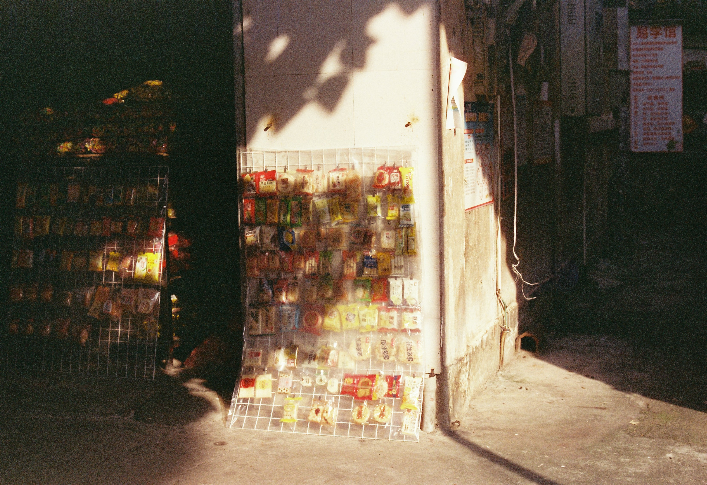
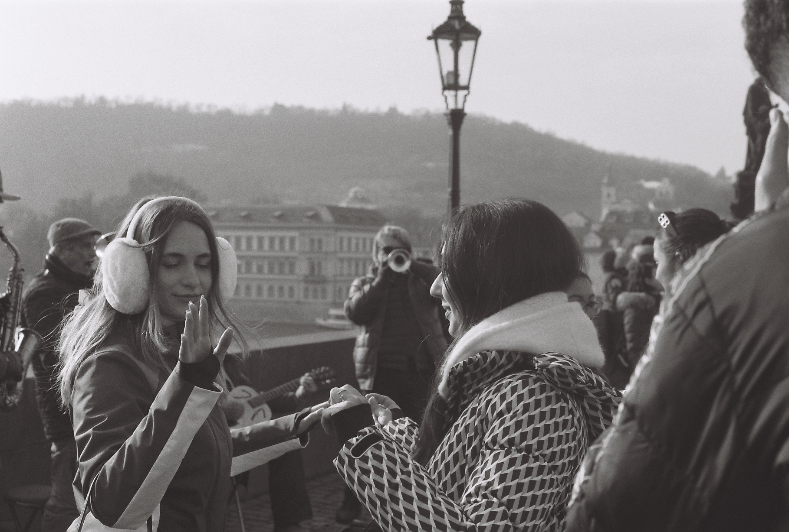
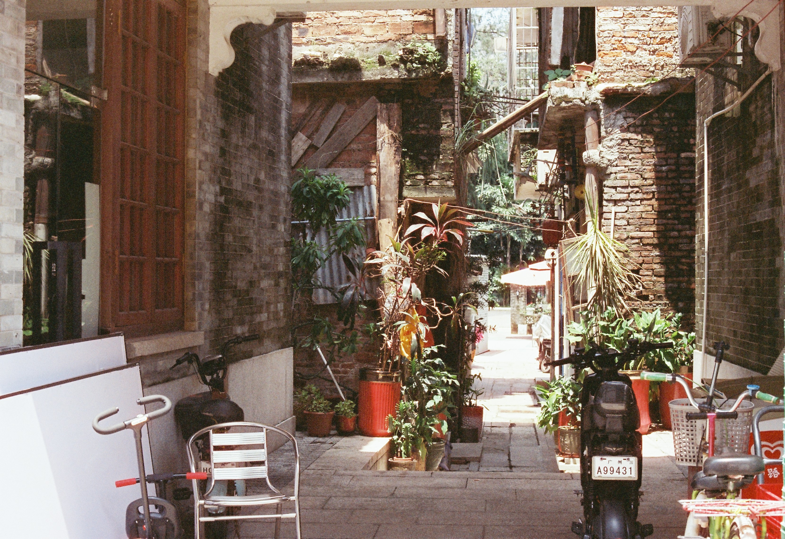
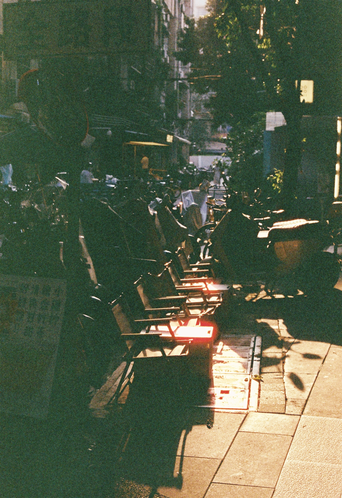
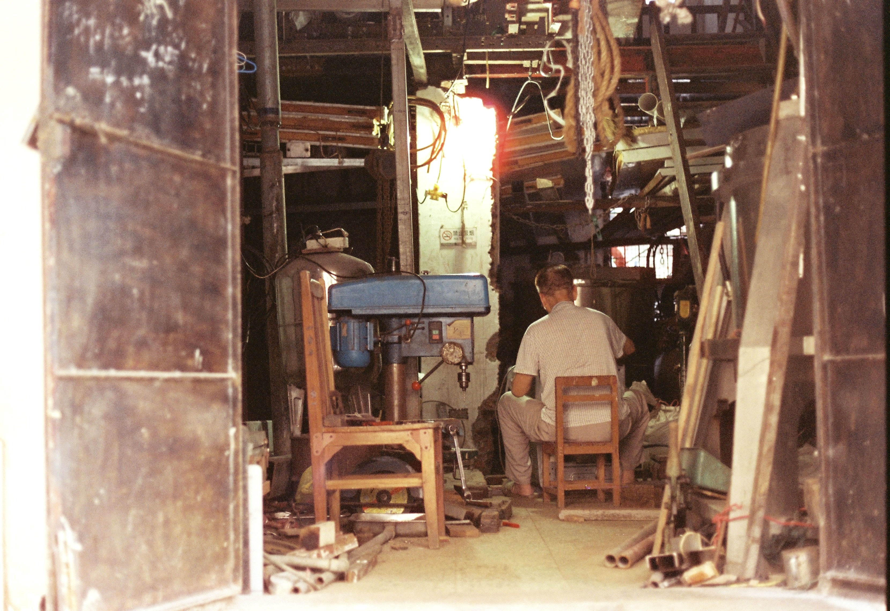
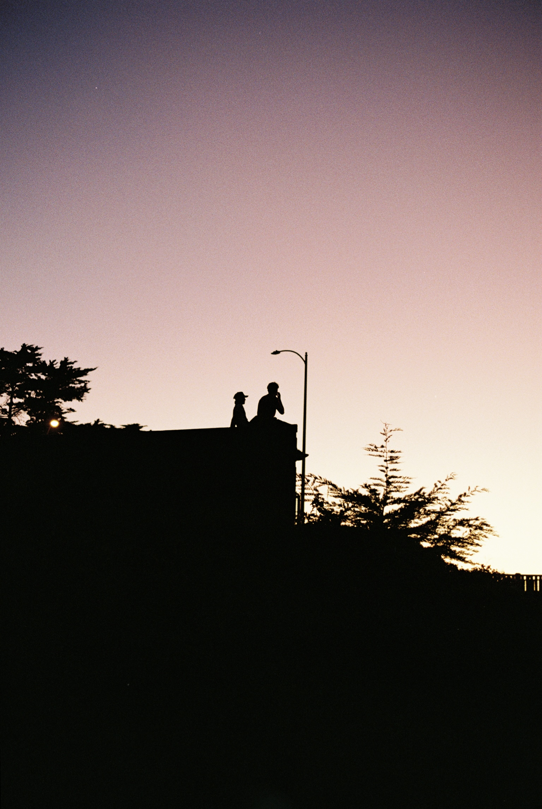
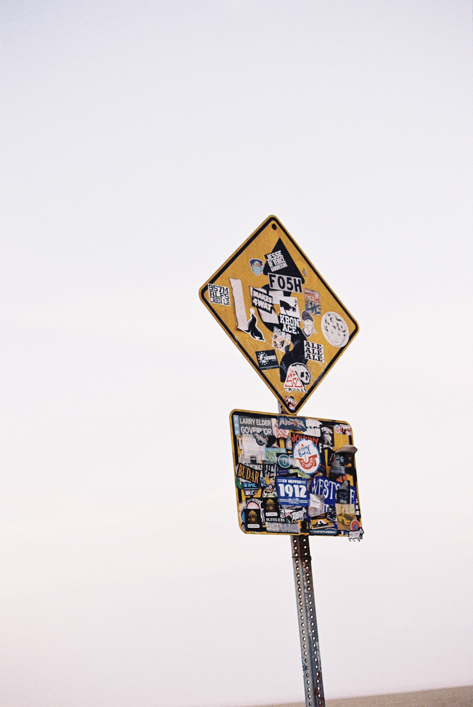
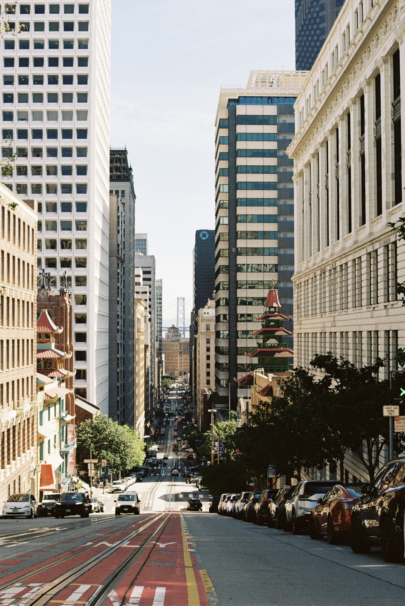
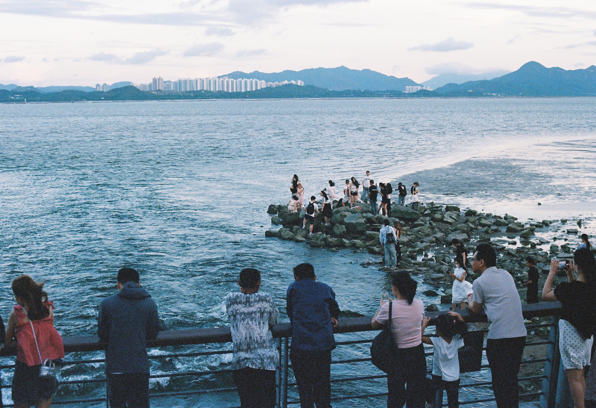

Project 01
Street Photography
I have always loved wandering around with my camera — through streets both familiar and new. This series collects small moments I met along the way: light, movement, strangers, architecture, and the quiet rhythm of public spaces.










